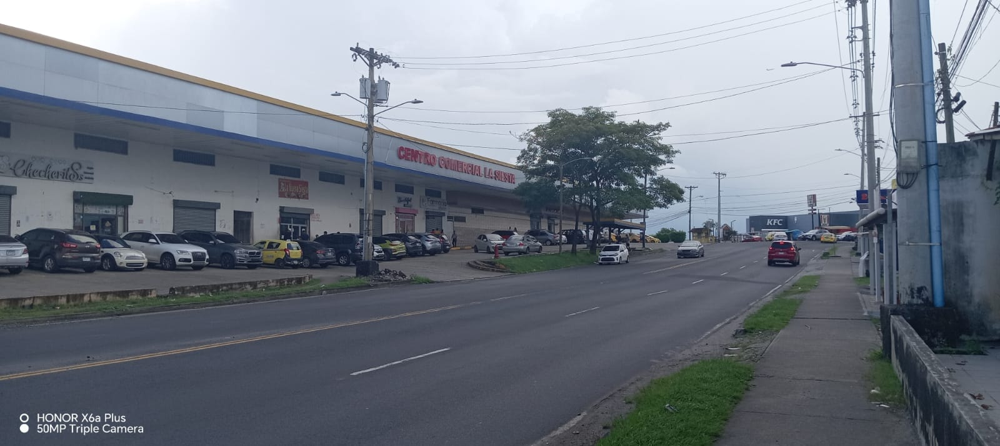

La barriada La Siesta tiene una zona paga que cuenta con instalaciones deportivas y un parque infantil.
A sus inicios contaba con tres bahías para los autobuses del Corredor Sur, Transístmica, Tumba Muerto y Vía España que hacían su recorrido hacía Albrook. Ahora hacen rutas desde la barriada La Siesta hasta el metro de la 24 de diciembre. Y de la zona paga de la barriada La Siesta hasta la zona paga de Pedregal, también hay una ruta de la zona paga de La Siesta hasta Mañanitas. También hay rutas desde la barriada de corredor 5 de mayo, Albrook, y Costa del Este. En La Siesta hay tiendas que funcionan al mismo tiempo como hogar y la mayoría de los dueños son chinos. donde los habitantes compran sus productos diarios para suplir sus diferentes necesidades.